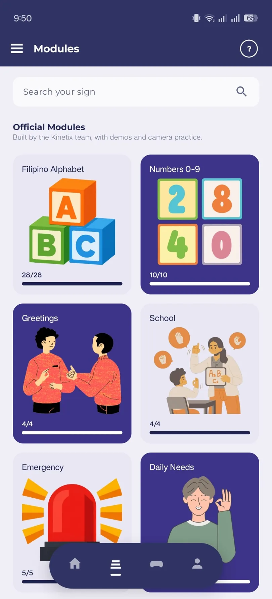
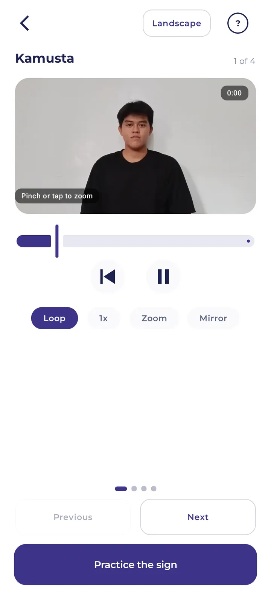
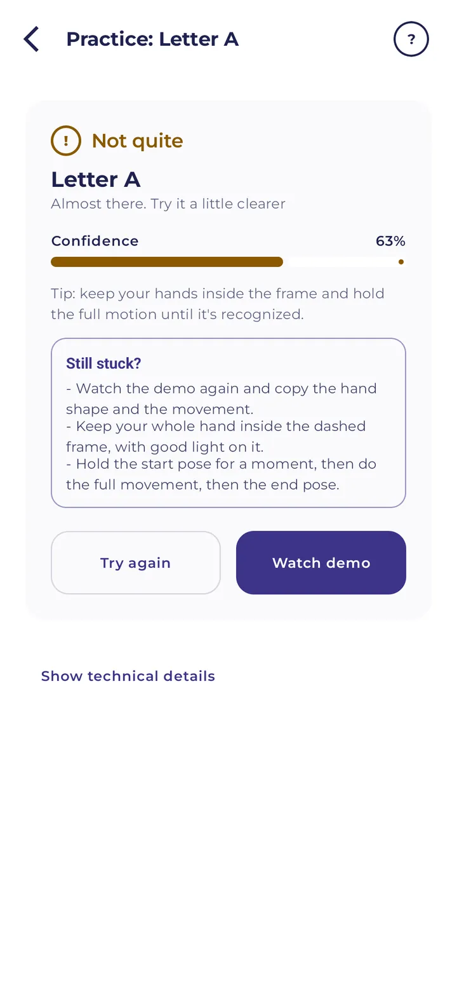
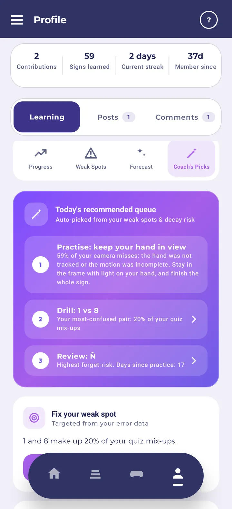
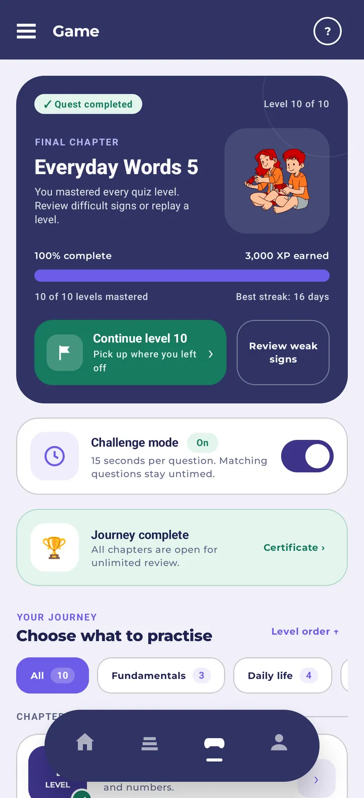
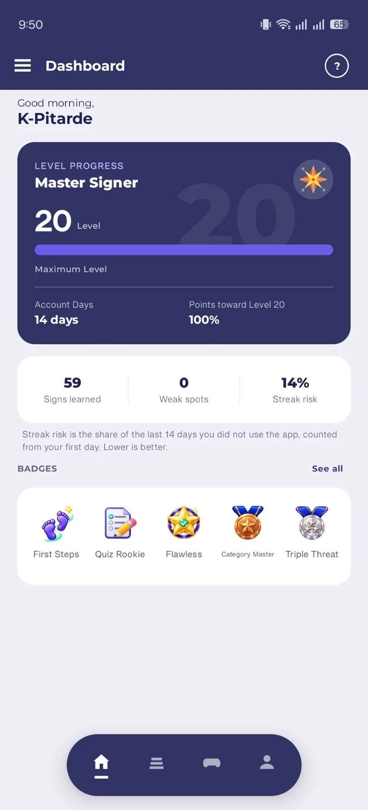
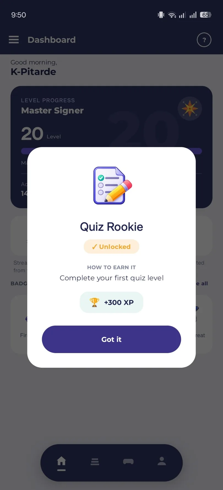
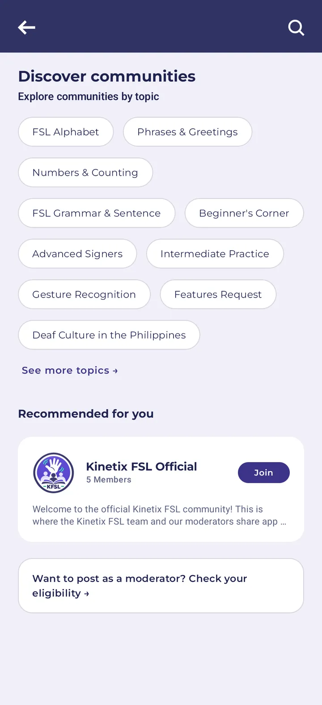
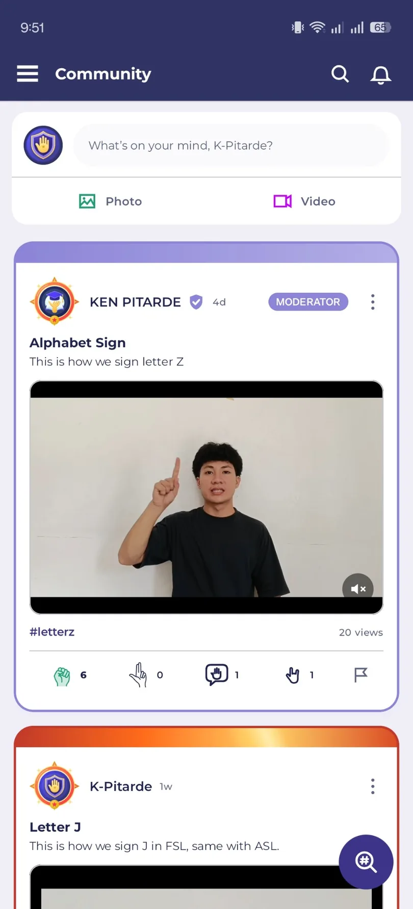
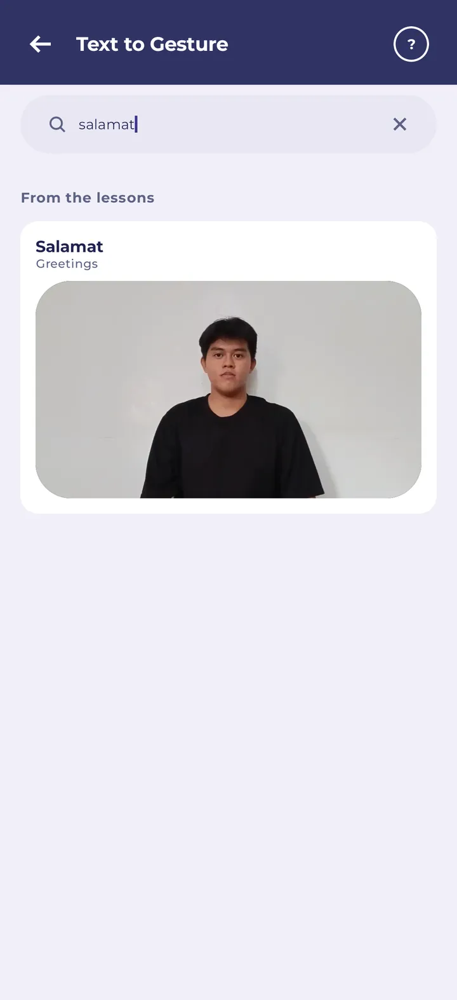

Matuto ng Filipino Sign Language gamit ang camera mo.
Ang KinetixFSL ay libreng Android app. Panoorin ang isang sign, gayahin ito sa harap ng phone mo, at agad na makakuha ng feedback. Gumagana nang walang internet ang mga aralin at camera practice.
Bersyon 1.0.9 · 106 MB
Kailangan ng Android 10 o mas bago, sa arm64 na phone.

Panoorin, gayahin, suriin.
Pareho ang takbo ng bawat sign, kaya laging malinaw ang susunod na gagawin.
-

Panoorin ang sign
Magbukas ng reference video o larawan. I-loop ito, pabagalin, i-zoom o i-mirror hanggang makita mo ang hugis ng kamay at ang galaw.
-
Gayahin sa camera
Humanap ng magandang ilaw, ilagay ang mga kamay sa frame, at mag-sign sa harap ng front camera. Sa phone mo mismo pinoproseso ang mga frame ng camera.
-

Suriin at ulitin
Sasabihin ng app kung gaano ka kalapit at kung ano ang dapat baguhin. Panoorin muli ang demo, subukan ulit, at magpatuloy.
59 na sign sa pitong module, at higit pa mula sa komunidad.
May demo at camera practice ang pitong opisyal na module na ito. Maaaring dumami pa ang catalog habang umuunlad ang app, at hindi pa sakop ng camera scoring ang lahat ng sign.
-
Filipino alphabet
Ang unang mga pundasyon mo, kasama ang Ñ at NG.
28 na signABCDEFGHIJKLMNÑNGOPQRSTUVWXYZ
-
Numbers
Magbilang mula 0 hanggang 9.
10 sign0123456789
-
Greetings
Simulan ang usapan.
4 na signKamusta · Salamat · Walang anuman · Ayos lang ako
-
School
Mga salita para sa klase.
4 na signTapos na · Klase · Lektyur · Guro
-
Emergency
Mahahalagang salita para sa emergency.
5 signPanganib · Manatili · Kalma · Aksidente · Ligtas
-
Daily needs
Para maintindihan ang pang-araw-araw na pangangailangan.
4 na signKain · Inom · Tulog · Gutom
-
Social interaction
Oo, hindi, kaibigan, patawad.
4 na signOo · Hindi · Kaibigan · Patawad
Mga community module
Sampung karagdagang module ang may 167 pang sign video. Inilalarawan ng app ang mga ito bilang mga sign mula sa mga community video, na sinuri ng mga moderator at mga guro ng SPED. Pinalalawak nila ang library lampas sa mga opisyal na module: Greetings and Polite Expressions, Question Words, Days of the Week, Months of the Year, Colors, Directions and Locations, People, Family and Relationships, Basic Action Words, Adjectives, at Mental Actions and Emotions.
Mga video lesson lamang ang mga ito. Wala pang camera scoring para sa kanila.
Ituloy ito, kasama ang iba.
Sinusubaybayan ng mga quiz, XP, streak at badge ang progreso mo. Nagmumungkahi ang app ng susunod na ipa-practice, at kapag online ka, maaari kang manood at magbahagi ng mga sign video kasama ang ibang learner.






Ano ang gumagana kahit walang internet.
Hindi dapat naghihintay ng signal ang practice.
Hindi kailangan ng internet
- Mga aralin
- Camera practice
- Mga quiz
- Progreso at mga badge
- Gesture to Text
Walang account na kailangan sa Guest mode.

Kailangan ng internet at account
- Community
- Chat
- Text to Gesture
- Cloud progress backup
- Mga online notification
Sa phone mo pinoproseso ang mga frame ng camera at hindi ina-upload para sa scoring.
Kasangkapan sa practice, hindi guro.
Patuloy pang binubuo ang recognition at hindi ito laging tama. Nag-iiba ang feedback depende sa ilaw, framing, galaw at kung sino ang nag-sa-sign.
Mag-aral din kasama ang mga guro ng FSL at ng komunidad ng mga Bingi hangga’t maaari. Narito ang KinetixFSL para dagdagan ang practice mo sa pagitan ng mga sandaling iyon.
Proyektong pang-estudyante mula sa Batangas State University.
Ang KinetixFSL ay BSIT capstone project mula sa Batangas State University, JPLPC-Malvar. Pinagsasama nito ang mga gabay na aralin at on-device na pagkilala ng sign sa isang Android app.
Ginawa ito para sa mga estudyante, pamilya, kaibigan at guro, bilang munting ambag sa mas maraming pagkakataong matuto at makipag-ugnayan.
I-download ang KinetixFSL para sa Android.
Maaaring hilingin ng Android na payagan mo ang pag-install mula sa browser mo. Pagkatapos noon, mula na sa loob ng app ang pag-install ng mga bagong bersyon: Settings, tapos Check for new updates.
I-download ang APK- Bersyon
- 1.0.9 · 106 MB
- Gumagana sa
- Android 10 o mas bago, arm64 na phone na may front camera
- Presyo
- Libre
- Checksum (SHA-256)
Mga tanong ng mga tao.
Paano ako makakakuha ng update?
Inilalathala sa pahinang ito ang mga bagong bersyon. Ini-install ng app ang mga ito mula sa Settings, tapos Check for new updates.
Gumagana ba ang app offline?
Dinisenyo para gumana offline ang mga aralin, camera practice, quiz, pagsubaybay ng progreso at Gesture to Text. Kailangan ng koneksyon sa internet ang Community, Text to Gesture, sign-in at cloud backup.
Kailangan ko ba ng account?
Para sa pag-aaral at offline practice nang walang account ang Guest mode. Kailangan mong mag-sign in para sa mga feature ng komunidad at cloud progress backup.
Ina-upload ba ang camera video ko?
Hindi para sa scoring. Sa phone mo pinoproseso ang mga frame ng camera na ginagamit sa pagkilala ng sign at hindi ito ina-upload para sa scoring. Hiwalay na online feature ang media na pipiliin mong i-post sa komunidad. Basahin ang privacy notice (nasa Ingles).
Gagana ba ito sa phone ko?
Kailangan ng APK ang Android 10 o mas bago at arm64 na phone. Kailangan ng front camera ang camera practice. Walang planong bersyon para sa iPhone.
Nakikilala ba nito ang lahat ng sign?
May 59 na sign sa pitong module ang opisyal na catalog, at sampung community module ang nagdaragdag ng 167 pang sign video bilang mga lesson lamang. Binubuo at sinusuri pa ang camera feedback kada module, kaya ang pagiging nasa mga aralin ng isang sign ay hindi nangangahulugang handa na ito para sa camera scoring.
Pamalit ba ito sa guro ng FSL?
Hindi. Kasangkapan ito sa pag-aaral at practice. Maaaring mag-iba ang feedback depende sa ilaw, framing, galaw at sa nag-sa-sign.